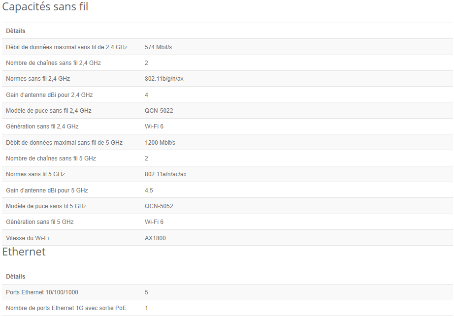
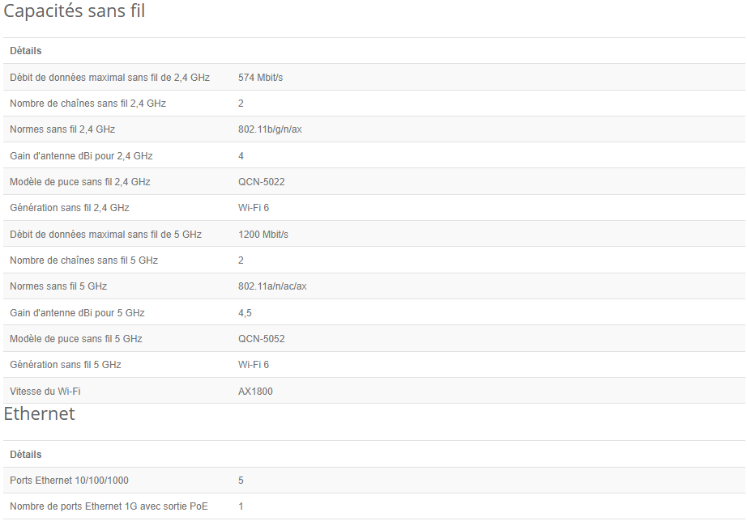
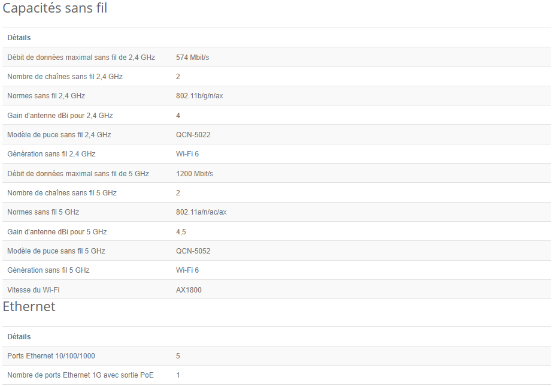

Caractéristiques du pack Nano de CloudSpot
Pour commencer le routeur mis en place par CloudSpot dans la solution Nano est le hAP ax² avec ces caractéristiques :
 

Ce cahier des charges définit les exigences et spécifications pour l'installation d'un réseau Wi-Fi public dans notre territoire. Les éléments suivants doivent être respectés :
Pour commencer le routeur mis en place par CloudSpot dans la solution Nano est le hAP ax² avec ces caractéristiques :

Veuillez consulter la carte ci-dessous pour voir les emplacements prévus pour les points d'accès Wi-Fi :
Pour toute question ou suggestion, veuillez contacter notre service à l'adresse e-mail suivante : contact@exemple.com.